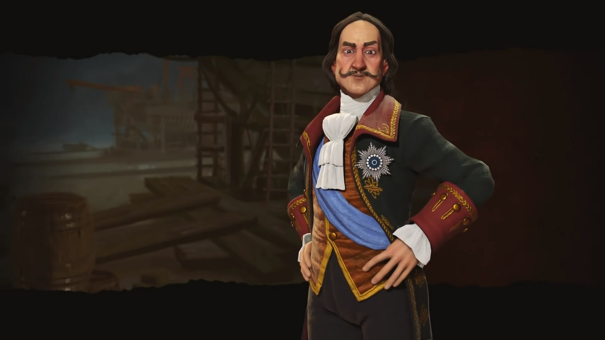

俄罗斯

领袖：彼得大帝（Peter）
领袖倾向：西化主义者（Westernizers）
喜欢科技与人文领先于俄罗斯的文明，敌视在这两方面落后于俄罗斯的文明。
领袖奖励：大使节团（Grand Embassy）
连接比自己更先进的文明的商路为俄罗斯提供额外产出（每三个俄罗斯尚未掌握的科技项目提供科研，每三个俄罗斯尚未完成的人文项目提供文化）。
特色单位：哥萨克骑兵（Cossack）
替代近代骑兵。哥萨克骑兵战斗力高于一般近代骑兵，身处或紧邻本国领土作战时战斗力增加5。攻击后能继续移动。
特殊设施：【城区】修道共同体（Lavra）
替代圣地。需求产能减半。每当俄罗斯在拥有修道共同体的城市消耗伟人时，该城市领土增加1格。
特殊能力：祖国母亲（Mother Russia）
俄罗斯的城市建立时获得额外的领土（增加8格）。
俄罗斯领土范围内的冻土地格额外产出产能和信仰。